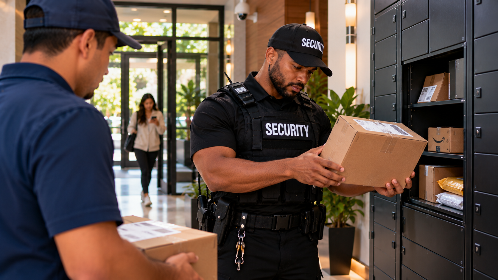

Residential
Package Theft Keeps Happening at Your Apartment Complex, and Residents Blame the Property

Security guard licensing rules vary; confirm current California BSIS requirements before hiring.
A delivery problem that has become a resident problem
Online shopping changed what an apartment lobby looks like. A building that once received a handful of parcels a week now receives dozens in a single afternoon, and during sale weeks and the holiday season, the pile can double again. Carriers are on tight schedules. If a resident is not home and there is no secure place to leave a box, the box sits where anyone passing by can see it.
The scale is not small. Security.org reports that people who live in apartments were victimized by package theft 3.5 times more often than homeowners in the period it studied, and residents without a mailroom or staffed entrance were hit the hardest. A separate survey reported by Chain Store Age found that 37 percent of apartment renters said they had a package stolen in the past year, with an average of two packages lost per renter.
For a resident, each loss feels personal. It is medication that never arrived, a work laptop that has to be reported missing, a birthday gift that has to be bought twice. The resident did everything right. They ordered, they tracked, they came home on time. The package was taken in the one place they expected to be safe, inside their own building.
Open gates undo everything else a property promises
Many complexes in the greater Los Angeles area rely on a single gate or a single lobby door to separate residents from the street. In practice, that separation often does not hold. Gates are propped open for movers and never closed. Access codes are shared with food delivery drivers, dog walkers, former residents, and friends of friends, until the code is effectively public. Visitors follow residents
through a closing gate because asking them to stop feels rude, and no one on site is responsible for asking.
Once someone is inside, there is usually nothing between that person and the packages. Lobbies, mail alcoves, and leasing office doorsteps are open spaces by design. A person who does not live in the building can walk in, look like they belong, pick up a box, and walk out in under a minute. Other residents who witness it often assume the person is a neighbor they have not met yet.
Cameras record the theft, they do not stop the blame
A common response from owners is that the building already has cameras, so the problem should be handled. Residents see it differently. A camera can sometimes show a face or a license plate after the fact, but it does not bring the package back, and it does not change the feeling a resident has when they come home to an empty spot where their delivery should be.
That gap matters for reputation. Prospective renters read reviews before they tour. When several reviews mention stolen packages, an open gate, or feeling unsafe in the parking area at night, those reviews carry more weight than any amenity list. A property can have a renovated gym and a beautiful pool deck and still lose a lease signing because a stranger online said their packages kept disappearing.
The cost shows up in renewals, reviews, and staff time
Package theft rarely appears as a line item, which is part of why it gets underestimated. The cost is spread across the operation. Leasing staff spend hours taking complaints, reviewing footage, and writing incident notes for incidents they could not have prevented from behind a desk. Maintenance staff get pulled into gate repairs after a gate is forced or left damaged. Residents who lose expensive items sometimes demand concessions, and a few pursue claims arguing the property failed to provide the secure environment its marketing implied.
The larger cost is turnover. Replacing a resident is far more expensive than keeping one, once vacancy loss, cleaning, repairs, and leasing time are counted. Residents rarely list a single reason for leaving, but a string of small safety frustrations is frequently part of the decision. A resident who had two packages stolen, who has seen strangers wander the halls, and who walks through a dark, unwatched parking area at night does not need a dramatic incident to decide to move. The everyday evidence is enough.
There is a liability side as well. When a property knows theft and unauthorized entry are recurring problems and a resident or guest is later harmed during an incident on the property, questions follow about what the owner knew and what was done in response. Those questions are asked by insurers, by attorneys, and sometimes by local reporters. A documented pattern of complaints with no visible response is a difficult record to defend.
Why apartment properties are singled out
Thieves think about effort and reward. A single family home offers one porch and one package, with a real chance a neighbor is watching. A large apartment complex offers many packages in one stop, multiple buildings to move between, and a steady flow of unfamiliar faces that makes a stranger blend in. Delivery activity itself provides cover, because a person carrying boxes in an apartment lobby looks normal at almost any hour.
The problem does not fix itself when the season ends
It is tempting to treat package theft as a holiday issue that fades in January. Deliveries do slow down after December, but the underlying conditions do not change. The gate code is still widely shared. The lobby is still unwatched. The parking area is still the place residents cross alone late at night. A quieter month can hide the problem without reducing it, and the next sale event or holiday season exposes it again, usually to a new group of residents who form their first impression of the property from that experience.
Properties that keep hearing the same complaint are not dealing with a string of unlucky weeks. They are dealing with a gap between the secure community residents were promised and the open, unwatched reality they live with. Closing that gap is not a leasing office task and it is not a camera upgrade on its own. It is a dedicated security responsibility, and it calls for licensed professionals whose only job is the safety of the property and the people who live there.
If residents at your complex are reporting missing packages, strangers in the halls, or gates that never seem to stay closed, that pattern deserves a serious conversation with a licensed security provider. Paradigm Security Services works with properties across greater Los Angeles and San Bernardino County, and a walk of your property can show you plainly where the gaps are.
Disclaimer: Security guard licensing rules vary; confirm current California BSIS requirements before hiring.
Sources: https://www.security.org/package-theft/annual-report/?ref=easyship.ghost.io, https://chainstoreage.com/survey-37-apartment-renters-reported-package-theft-past-year, https://bsis.ca.gov/consumers/faqs/ppo.shtml
Paradigm Security Services | Security Guard Services, Event Security & Commercial Security | paradigmsecurityservices.com | CA PPO120139